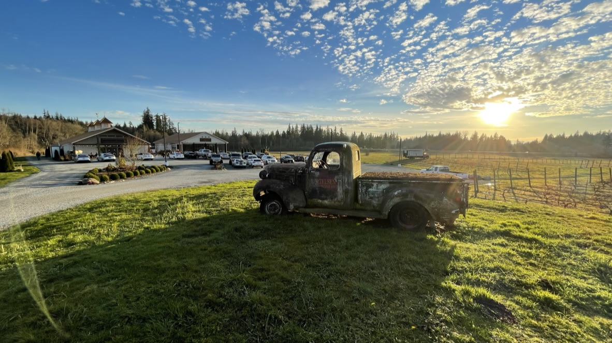

Technology executive · founder · private pilot · photographer
I turn complex technology programs into clear decisions and dependable delivery.
For more than 20 years, I have moved between strategy, architecture, engineering, and delivery. I stay close enough to the technology to test the plan and broad enough to build the organization that can carry it.
Associate Partner and Technical Director at IBM · New York City metropolitan area
Career totals are conservative and based on documented roles and programs. Engagement values describe account or program scope, not personal sales credit.
The work
Leadership that holds strategy and execution in the same frame.
A strategy is only useful if the organization can deliver it. I work across the business, experience, architecture, and delivery so the plan survives contact with reality and the team can execute it.
Enterprise transformation
Turn assessments into funded portfolios, delivery structures, and governance that keep business, data, technology, and value connected.
Platform and experience strategy
Translate customer and employee needs into reusable capabilities, pragmatic architecture, and roadmaps teams can actually execute.
Delivery recovery
Make risk visible, restore technical evidence, clarify ownership, and rebuild confidence when a critical program has lost momentum.
Organizations that scale
Build multidisciplinary teams, operating rhythms, and leadership expectations that preserve accountability as the work grows.
Selected evidence
Examples of the work and what changed.
Representative results from documented engagements. Client-sensitive details are intentionally generalized.
Enterprise operations
Financial services
Turned an enterprise assessment into a prioritized delivery portfolio.
Led discovery across 17 functions, 275 procedures, 58 interviews, and eight workshops. The team identified 63 transformation opportunities, translated them into a prioritized blueprint, and built the governance needed to move from assessment into delivery.
- 100person account organization
- $40M+signed engagement value
- 17functional areas assessed
Program recovery
Global banking
Restored engineering discipline on a delivery at risk.
Took responsibility for a failing platform program, coordinated 16 onsite and 47 offshore team members, introduced engineering and automation practices, and rebuilt the evidence required for credible executive decisions.
- 0→80%+unit test coverage
- 50%+of core code refactored
- On timerecovered delivery
Platform leverage
Media and streaming
Changed the economics of launching a digital property.
Established a reusable white-label platform approach, grew multidisciplinary application teams, and paired engineering standards with product-level financial models for portfolio decisions.
- 3–6 mo.previous launch cycle
- <1 wk.new-property launch cycle
- 10→70+reported team growth across disciplines
Figures reflect the scope and measures documented in source materials. They do not imply sole personal attribution.
The throughline
Builder, founder, engineering leader, enterprise operator.
I have written the code, built the company, led the product and engineering organization, and carried accountability for enterprise programs. That range helps me see the whole system without losing the details that can break it.
-
2000–2008
Early web and entrepreneurship
Developed interactive products, then founded and operated a digital consultancy serving organizations with audiences above 10 million monthly visitors.
-
2008–2013
Sony Music, ANN Inc., and Tykoon
Moved from high-scale consumer platforms and digital commerce into startup executive leadership as Vice President of Engineering.
-
2014–2017
Warner Bros. and DramaFever
Led client application strategy across web, mobile, and connected television while developing a reusable platform model for a growing portfolio.
-
2017–Now
IBM
Lead technology strategy, architecture, commercial shaping, organization design, and delivery across complex enterprise transformations.
Writing and field notes
Ideas worth working through.
I am developing a practical body of writing about transformation, technology leadership, delivery, and sustainable performance. These are the first themes in the editorial roadmap.
Transformation
The assessment is not the transformation.
Why a strong diagnostic still fails without a funded portfolio, accountable owners, and a delivery operating model.
Architecture
Kafka can move the data. It cannot make the data agree.
Data rationalization starts upstream: definitions, ownership, and canonical models shape every event, workflow, and downstream decision.
Delivery
Evidence before green status.
How delivery teams replace optimistic reporting with technical proof and decision-ready risk.
Leadership
Calm is a leadership capability.
Pressure reveals the quality of an operating culture—and the habits leaders have built before the crisis.
Product economics
The business case is part of the product.
Investment logic belongs beside experience, architecture, and delivery—not after them.
AI-enabled operations
AI use cases need an operating model before a model.
Value depends on workflow ownership, evidence, controls, and adoption as much as technical capability.
30+ additional topics are mapped. Full articles will replace these working abstracts as they are developed.
Speaking and advisory
Speaking and advisory work grounded in delivery.
I speak and advise from work I have actually done: technology leadership, platform strategy, program recovery, organizational health, and the cost of treating human durability as optional.
- Executive and board advisory
- Keynotes, panels, and technical debates
- Leadership coaching and team workshops
Beyond the work
I am not what I do for a living.
Work matters to me, and I take it seriously. It is still only one part of who I am. I am a founder, coach, private pilot, photographer, perpetual learner, and executive producer supporting Cool Worlds Labs.
I pursue things that make me more capable, more curious, or simply more alive. Some have nothing to do with technology. That is the point.
Selected licenses and credentials
Private Aircraft Pilot
Issued 2021
Certified Cloud Practitioner
Issued 2022
Real Estate Salesperson
Licensed 2018–2026
Certified Scrum Product Owner
Issued 2016
Certified Scrum Master
Issued 2015
Photography
I take a lot more photographs than I publish.
I am drawn to weather, movement, machinery, and places with a strong sense of scale. Photography makes me slow down, choose a frame, and notice what I would otherwise walk past.

Start a conversation
If you are responsible for a transformation that has to work, we should talk.
For executive roles, advisory work, speaking, or a private discussion about a transformation in motion.